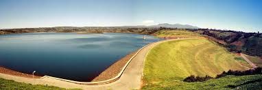
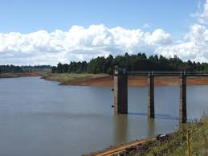

Welcome to Water Shortage Monitor
Sign in to view the current status of water availability in your area.
💧
💦
🚱
Sign In
Stay Updated with the Latest Information on Water Shortages in Kilimani
Status of Water Availability: Kilimani has been experiencing intermittent water supply disruptions due to increased demand and aging infrastructure. Recent reports indicate that water rationing might be in place in some areas.
Causes of Shortages:
- Population Growth: Rapid urbanization and population growth in Kilimani have put a strain on existing water resources.
- Infrastructure Issues: Aging pipelines and treatment plants often lead to leaks and inefficiencies in water distribution.
- Climate Change: Changing weather patterns and prolonged dry spells have reduced water availability from natural sources.
Ongoing Solutions:
- Infrastructure Upgrades: The local government is investing in the repair and upgrading of water supply infrastructure to reduce leaks and improve efficiency.
- Water Conservation Campaigns: Initiatives are in place to promote water-saving practices among residents and businesses.
- Alternative Water Sources: Efforts are being made to explore and implement alternative water sources, such as rainwater harvesting and wastewater recycling.
Impact on Daily Lives:
- Residential Impact: Residents may face irregular water supply, leading to challenges in daily activities such as cooking, cleaning, and personal hygiene.
- Economic Impact: Businesses, particularly those relying heavily on water, may experience operational disruptions and increased costs.
- Health Concerns: Inadequate water supply can lead to increased risk of waterborne diseases and hinder proper sanitation.
Recent Developments:
- Community Meetings: Regular community meetings are being held to keep residents informed about the status of water supply and upcoming projects.
- Technology Integration: New technologies for water monitoring and management are being tested to improve the efficiency of water distribution and conservation efforts.
Advanced Features
Explore advanced features like real-time monitoring and data analytics to stay informed about water availability in your area.
Sensor Information:
Thika Dam
Water Level: 70%
Flow Rate: 1.5 liters/minute
Temperature: 25°C
Sasamua Dam
Water Level: 55%
Flow Rate: 2.5 liters/minute
Temperature: 20°C

Thika Dam

Sasamua Dam